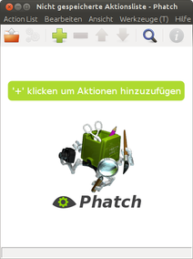
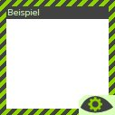

Phatch
Dieser Artikel wurde für die folgenden Ubuntu-Versionen getestet:
Ubuntu 17.10 Artful Aardvark
Ubuntu 16.04 Xenial Xerus
Ubuntu 14.04 Trusty Tahr
Zum Verständnis dieses Artikels sind folgende Seiten hilfreich:
Der Programmname Phatch steht für „Photo Batch Processor“ - das Anwenden (eines oder) mehrerer, aber immer gleicher Arbeitsschritte auf eine ganze Serie von Bildern. Diese Vorgehensweise wird allgemein auch als Stapelverarbeitung bezeichnet.
Phatch ist also keine Bildbearbeitung im klassischen Sinn, sondern wendet bestimmte Aktionen (z.B. Effekte) auf eine Auswahl von Bildern an. Während Programme wie ImageMagick nur auf der Kommandozeile arbeiten, stellt Phatch eine komfortable grafische Oberfläche zur Verfügung. Da die Aktionen und ihre Reihenfolge abgespeichert werden können, reduzieren sich spätere Arbeitsschritte auf das Laden der Aktionsliste und die Auswahl der zu bearbeitenden Bilder.
Das auf Python 2.7 basierende, plattformübergreifende Programm bietet u.a. folgende Funktionen:
Bildaktionen (Auswahl):
Größenänderung
Drehen
Invertieren
Spiegeln
Wasserzeichen (Grafik und Text)
Schatten
Runde Ecken
optionale Kommandozeilenversion (für Server ohne GUI)
Unterstützt werden die meisten populären Bildformate (vollständige Liste  ). Entwickelt wurde das Programm von Stani Michiels.
). Entwickelt wurde das Programm von Stani Michiels.
Installation¶
 Das Programm ist in den offiziellen Paketquellen vorhanden. Folgendes Paket muss installiert [1] werden:
Das Programm ist in den offiziellen Paketquellen vorhanden. Folgendes Paket muss installiert [1] werden:
phatch (universe)
 mit apturl
mit apturl
Paketliste zum Kopieren:
sudo apt-get install phatch
sudo aptitude install phatch
Zusätzlich stehen bei Bedarf die folgenden Pakete zur Verfügung:
phatch-cli (universe, optional, Kommandozeilen-Werkzeug)
phatch-doc (universe, optional, englische Programmdokumentation)
mit apturl
Paketliste zum Kopieren:
sudo apt-get install phatch-cli phatch-doc
sudo aptitude install phatch-cli phatch-doc
Benutzung¶

Das Programm kann mit dem Befehl phatch gestartet [2] werden. Zum Einstieg sei auf die hervorragende Anleitung Der Anfang mit Phatch  verwiesen. Erwähnenswert sind nur folgende Punkte:
verwiesen. Erwähnenswert sind nur folgende Punkte:
die Reihenfolge der Aktionen ist wichtig! Beispielsweise sollten Effekte wie Schatten oder runde Ecken grundsätzlich erst nach Größenänderungen angewendet werden.
die letzte Aktion sollte immer "Speichern" sein. Hier kann auch festgelegt werden, ob die Originale (nicht) überschrieben und wo die bearbeiteten Bilder gespeichert werden sollen.
Weitere Beschreibungen der möglichen Funktionen sind der Dokumentation zu entnehmen, insbesondere der Liste der möglichen Aktionen . Darüber hinaus können auch eigene Aktionen (in Python) geschrieben werden.

Aktionsliste¶
Die Aktionsliste ("Action List") ist der zentrale Dreh- und Angelpunkt des Programms. Hier können Aktionen hinzugefügt oder entfernt, die Reihenfolge geändert und auch einzeln de- bzw. aktiviert werden. Alle Aktionen können darüber hinaus noch einzeln konfiguriert werden, um sie dem eigenen Bedarf anzupassen. Über "Werkzeuge -> Ausführen", die Tastenkombination Strg + ⏎ oder das nebenstehende Symbol wird die Verarbeitung der Aktionsliste gestartet. Vor dem Abarbeiten der Aktionen erfolgt in einem Zwischenschritt die Auswahl der Bilder. Noch einfacher geht es allerdings mit dem "Droplet".
Wenn man die Aktionsliste speichert, kann diese später wieder geöffnet und auf beliebige Bilder angewendet werden. Mit der Tastenkombination Strg + H lässt sich zusätzlich eine Beschreibung eingeben bzw. anzeigen.

Droplet¶
Das Droplet von Phatch ist besonders praktisch, um via "Ziehen und Fallen lassen" (Drag'n'Drop) Bilder zu Phatch hinzuzufügen. Aktiviert wird es über den Menüeintrag "Ansicht -> Droplet". Vorher sollte allerdings eine "Action List" erstellt oder geöffnet werden, die dann für die Bilderauswahl verwendet wird. Die verwendete Liste wird oben links im Droplet angezeigt. Beendet wird dieser Modus durch einen Rechtsklick ( ) auf den Rand des Droplets.
) auf den Rand des Droplets.
Image Inspector¶
Basierend auf Exiv2 können eingebettete Metadaten der Formate Exif und IPTC angezeigt und auch bearbeitet werden (entsprechende Felder sind mit einem Stiftsymbol gekennzeichnet). Via Kontextmenü () lassen sich auch mehrere Bilder gleichzeitig ändern.
Die Metadaten können zusätzlich als Grundlage für Dateioperationen dienen, beispielsweise zum Umbenennen nach Exif-Datum/-Zeit. Dazu dienen verschiedene Aktionen wie z.B. Write Tag und Save Metadata bzw. Save Tags .
Mit Hilfe von Nautilus-Actions lässt sich der Image Inspector in das Kontextmenü von Nautilus einbinden. Als Befehl wird phatch -n verwendet. Dies ist insbesondere für IPTC-Daten praktisch, da Nautilus von Haus aus über "Eigenschaften -> Bild" nur Exif-Daten anzeigt.
Problembehebung¶

Ubuntu 16.04¶
Falls sich Phatch nicht starten lässt, handelt es sich wahrscheinlich um den Fehler 1567827. In Ubuntu 16.10 wurde er bereits behoben, bei Ubuntu 16.04 muss man derzeit selbst tätig werden (Stand: Dezember 2016). Dazu wird das Programm patch und die Korrekturdatei phatch.diff  benötigt, die anschließend mit Root-Rechten auf die Datei /usr/share/phatch/phatch/lib/pyWx/wxPil.py angewendet werden muss:
benötigt, die anschließend mit Root-Rechten auf die Datei /usr/share/phatch/phatch/lib/pyWx/wxPil.py angewendet werden muss:
sudo patch -b /usr/share/phatch/phatch/lib/pyWx/wxPil.py < ~/Downloads/phatch.diff
Hoch- bzw. Querformat¶
Falls Bilder im Hoch- und Querformat gemeinsam verarbeitet werden sollen, ist die Erweiterung Conditional Transpose nützlich. Damit lässt sich konkret steuern, wie z.B. die Skalierung in Abhängigkeit von der Orientierung erfolgen soll. Ansonsten lassen sich auch einfach zwei unterschiedliche Aktionslisten anlegen.
Links¶
Phatch
in Ubuntuforums.orgPhatch – PHoto & bATCH
- grafisches Wasserzeichen einfügenXnConvert - plattformübergreifendes Alternativprogramm
Grafik
 Übersichtsartikel
Übersichtsartikel
- Erstellt mit Inyoka
-
 2004 – 2017 ubuntuusers.de • Einige Rechte vorbehalten
2004 – 2017 ubuntuusers.de • Einige Rechte vorbehalten
Lizenz • Kontakt • Datenschutz • Impressum • Serverstatus -
Serverhousing gespendet von